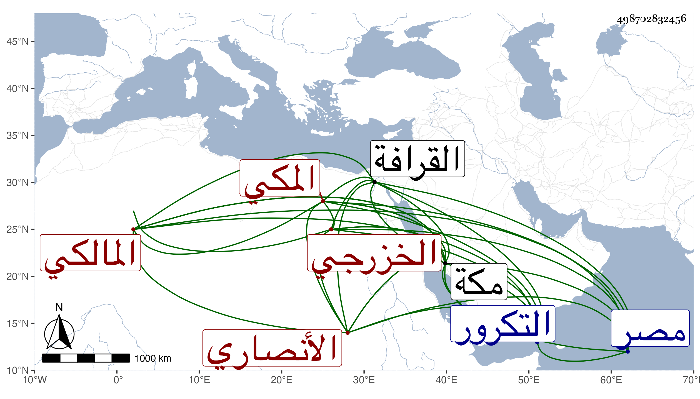

0902Sakhawi.DawLamic.ITO20230111-ara1.EIS1600.498702832456
Biography ID: 498702832456
179
أبو بكر بن قاسم بن عبد المعطي بن أحمد بن عبد المعطي بن مكي ابن طراد الأنصاري الخزرجي المكي المالكي ويعرف بالحجازي سمع من عثمان بن الصفى أحمد الطبري بمكة ومن غيره ودخل بلاد التكرور فاتفق أنهم كانوا احتاجوا للاستسقاء فاستسقوا به فسقوا وذلك ببلد ماملى ثم رجع إلى مصر فأقام بها وكان يكثر زيارة الصالحين بالقرافة ويشارك في قليل من الفقه ويدري التاريخ اجتمعت به مرارا . قاله شيخنا في أنبائه وقال في معجمه كان حسن المذاكرة كثير الاستحضار للتواريخ استفدت منه كثيرا . ومات في سنة ست عن سبع وسبعين سنة وكان يعرف بين المصريين بالفقيه أبي بكر الحجازي وذكره الفاسي والمقريزي في عقوده وقال لقيته بمكة وكان حسن المذاكرة كثير الاستحضار للتاريخ .
